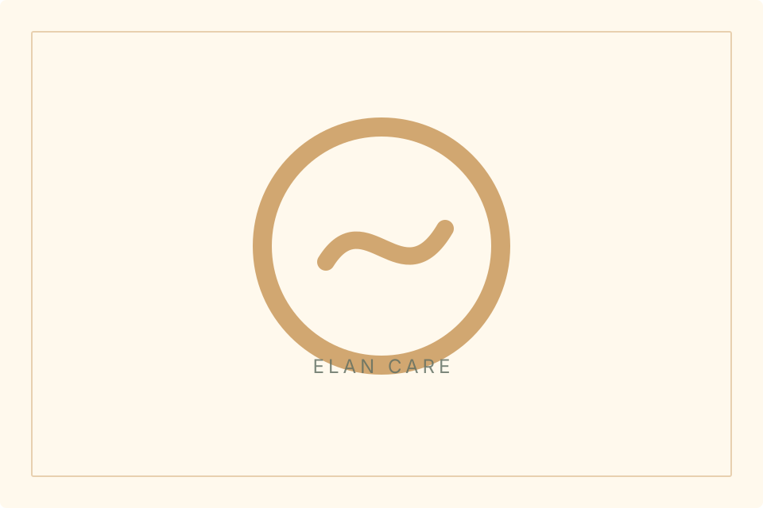
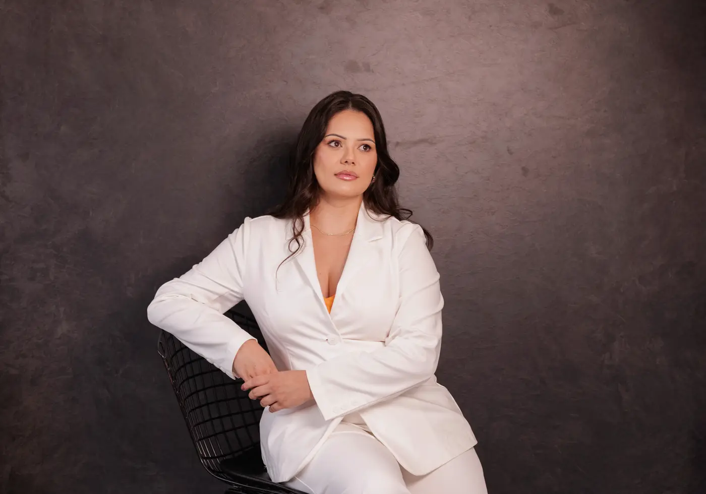
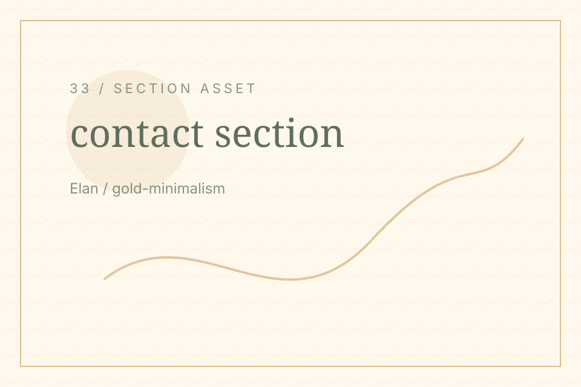
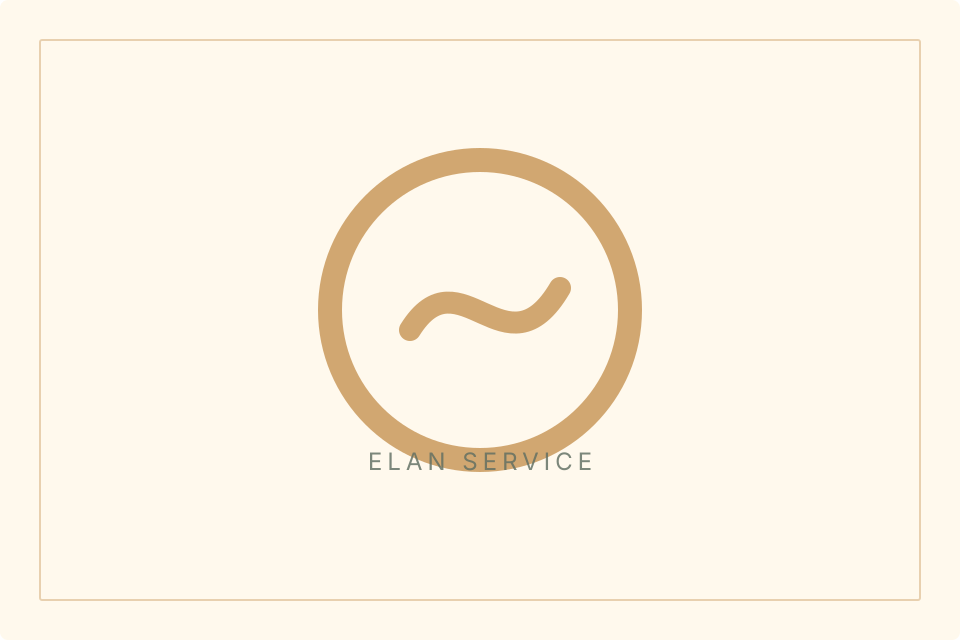
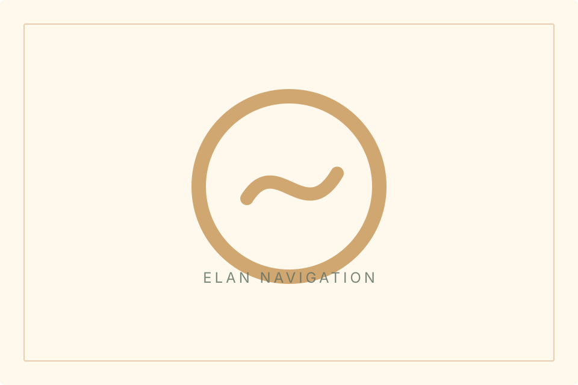
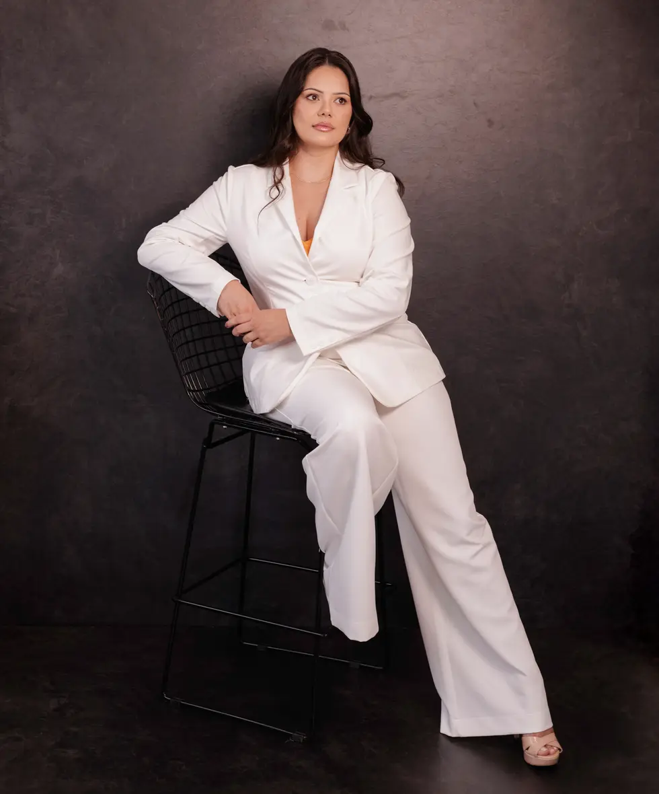
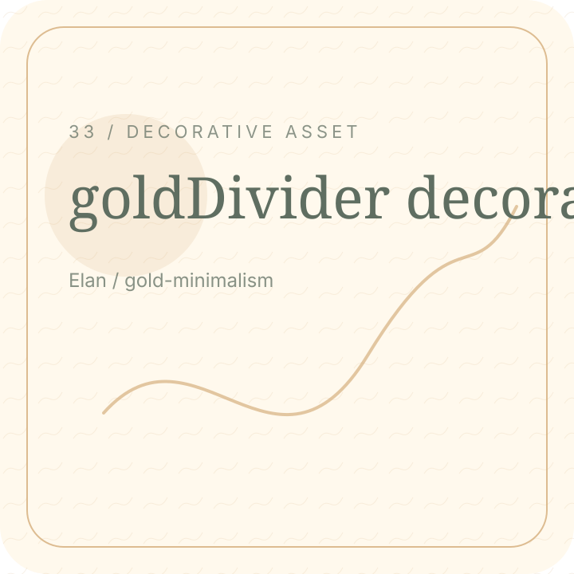

Useful route.
Elan / Contact Hero
Send a private message or request an evaluation when you feel ready.

Elan / Best Next Step
For care decisions, begin with evaluation. For questions, send a short message.

Elan / Contact Options
Choose WhatsApp, email, or the form route.

Useful route.

Useful route.

Useful route.

Elan / Message Tips
A short note can make the first response more useful.
Elan / Form Section
Share your question and preferred contact route.
Elan / Reassurance Break
You can begin with a question before deciding anything.

Elan / FAQ Bridge
Read common questions before sending your message.
Elan / Trust Links
Review privacy or accessibility information if helpful.
Elan / Consultation Reminder
A consultation gives your questions more context and direction.